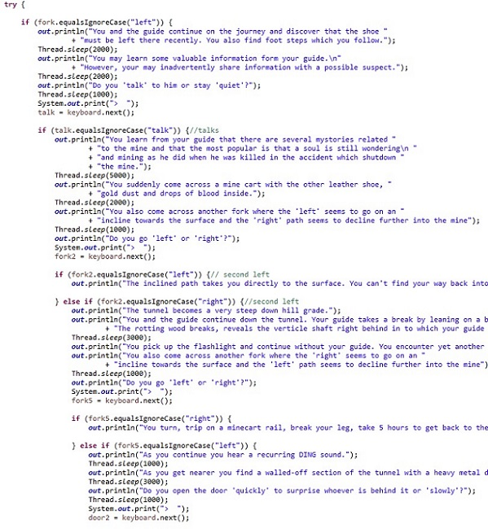
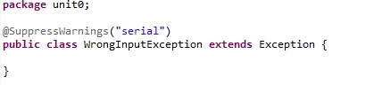

Java Content
ASCII Box Lab
Introducing the Eclipse IDE for Java. We used the System.out.println() statement to print a line in the console. We also used the "\t" for a tab and the "\n" for printing a new line.
ASCII Box 2 Lab
In this small lab we use print statements once again. The println statements print piece of dialog and then leave the cursor at the next line usually for more print statements. In this lab we were supposed to copy and paste all the print statements, however, I decided to use the more effecient "for" loop for the most repetetive code.
Input Basics Lab
In this lab we introduced the Scanner class in order for the user to be able to interact with the program. To used the Scanner we first inported the Scanner. We defined the Scanner (gave it a name) We prompted the user with a question about entering any integer. Since the integer is what the Scanner is reading we code the Scanner as "intOne = keyboard.nextInt();". This stores the integer which the user inputs as the variable "intOne".
Concepts Learned
- Input and output syntax: the "print" statement. This includes println and simple print statements.
- Importing the "Scanner" class so the program can read the user input.
- Using the Scanner to get different types of user input like integers and strings.
Java Story
 Description
This project introduces the basic java suntax for user interacting and decision making statements. The program interacts with the user by prompting them with a problem and giving them a limited number of decisions. The user types the decision into the console which the program then translates into a string which is used to test the booleans in if, else if, and else statements. The dicisions take the form of a tree where some branches lead to faliure of the mission while some reach the goal but in different ways. This tree is constructed with if statements in the program. In my program there is four branches and sometimes five branches in the most complecated branches. We were also required to handle exceptions when the user did not type a correct word when replying. To do this, I created by own exception called "WrongInputException" (seen above in the screenshot). To implement this exception I used "try" and "catch" staements and if staements to "throw" the exception.
Concepts Learned
- Input and output syntax: the "print" statement.
- Importing the "Scanner" class so the program can read the user input.
- Using "if" statements and how to manage the boolean values
- Boolean values "equal to" and "or" and "and" statements to be used in the "if" statements.